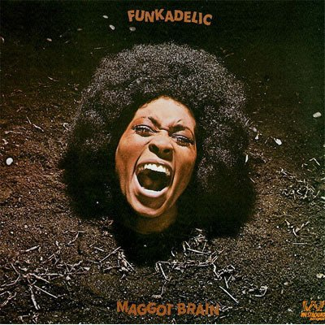

Maggot Brain
Je connaissais déjà Maggot Brain, mais j’en avais gardé très peu de souvenirs. Je savais surtout que Funkadelic, c’était ce funk culte, sous acide, quelque part entre le groove et le rock psychédélique. En le réécoutant, j’ai compris assez vite que la formule était encore trop simple.
Le morceau-titre ouvre le disque comme un rituel. Une voix d’outre-tombe, puis presque plus rien : un arpège de guitare, un solo noyé dans la réverbération, parfois doublé, sans batterie ni basse pendant une grande partie du morceau. Drôle d’entrée pour un disque de funk. On entend les craquements de l’ampli, le souffle du micro, toute une matière électrique laissée volontairement vivante. Fermer les yeux suffit presque à faire apparaître l’espace du morceau.
Ce n’est plus vraiment une chanson : c’est une sensation qui se déplace dans l’espace.
Et puis tout change. Can You Get to That devient soudain plus solaire, presque joyeux, mais les voix graves conservent quelque chose de théâtral et de bizarre. Hit It and Quit It installe un riff entêtant qui évoque immédiatement Hendrix, puis laisse surgir un énorme solo d’orgue presque prog rock. Le funk est bien là, dans le moteur rythmique, mais tout ce qui se pose dessus semble venir d’ailleurs.
C’est probablement ce qui m’a le plus amusé dans le disque : rien ne reste longtemps à sa place. You and Your Folks, Me and My Folks donne une impression très forte de live en studio, comme si tout le groupe jouait dans la même pièce. Super Stupid pousse encore plus loin le versant Hendrix et hard rock — c’est d’ailleurs la partie qui me parle le moins. Et juste après, Back in Our Minds repart dans une direction presque comique, avec ses percussions, ses cuivres et sa guimbarde qui fait basculer le morceau dans une sorte de cabaret psychédélique.
À mesure que l’album avance, j’ai eu l’impression d’entendre des musiciens noirs américains absorber l’acid rock et le psychédélisme de leur époque pour les recombiner avec un héritage soul, gospel, blues, R&B et funk. Pas un simple mélange de genres, mais une collision culturelle complète. Le groove reste le point d’ancrage, pendant que tout le reste peut devenir rock, théâtral, absurde, cosmique ou franchement grotesque.
Sans les deux longs morceaux qui encadrent presque l’album, je serais probablement resté autour de 6,5 ou 7. Le milieu est très bon, inventif, souvent drôle, mais pas toujours aussi marquant. Ce sont Maggot Brain et Wars of Armageddon qui font passer le disque ailleurs.
Le dernier morceau est l’exact opposé du premier. Là où Maggot Brain suspend le temps, Wars of Armageddon le remplit jusqu’à l’étouffement. Ça joue vite, ça fourmille, c’est absurdement technique, mais tout reste serré. Des voix, des sons martiaux, des bruits d’avion et tout un chaos organisé donnent l’impression que cette musique folle répond à une guerre tout aussi démente. Et au milieu de cette apocalypse, Funkadelic trouve encore le moyen de terminer avec des bruits de pets. Énorme.
Le premier morceau regarde vers l’intérieur. Le dernier regarde le monde brûler.
C’est cette réponse entre les deux qui donne finalement sa forme au disque. Un voyage intérieur, puis une explosion collective. Entre les deux, Funkadelic traverse tout ce qu’il peut : funk, rock psychédélique, hard rock, prog, soul, humour, théâtre, studio et sensation de live. Ce n’est pas toujours ce qui me touche le plus musicalement, mais c’est tellement libre que ça finit par devenir impossible à oublier.
8/10. Deux morceaux uniques qui transforment un très bon disque en expérience complète.